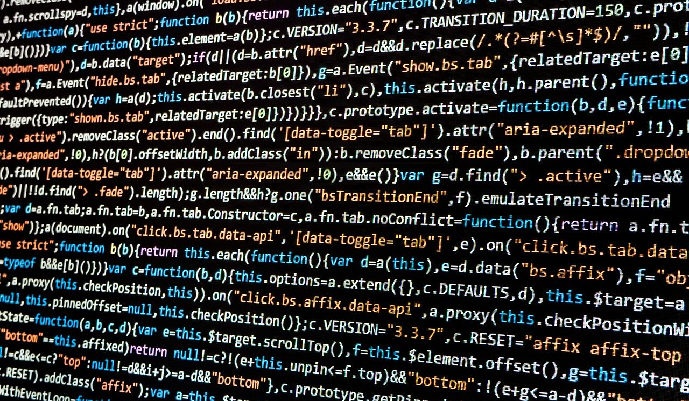
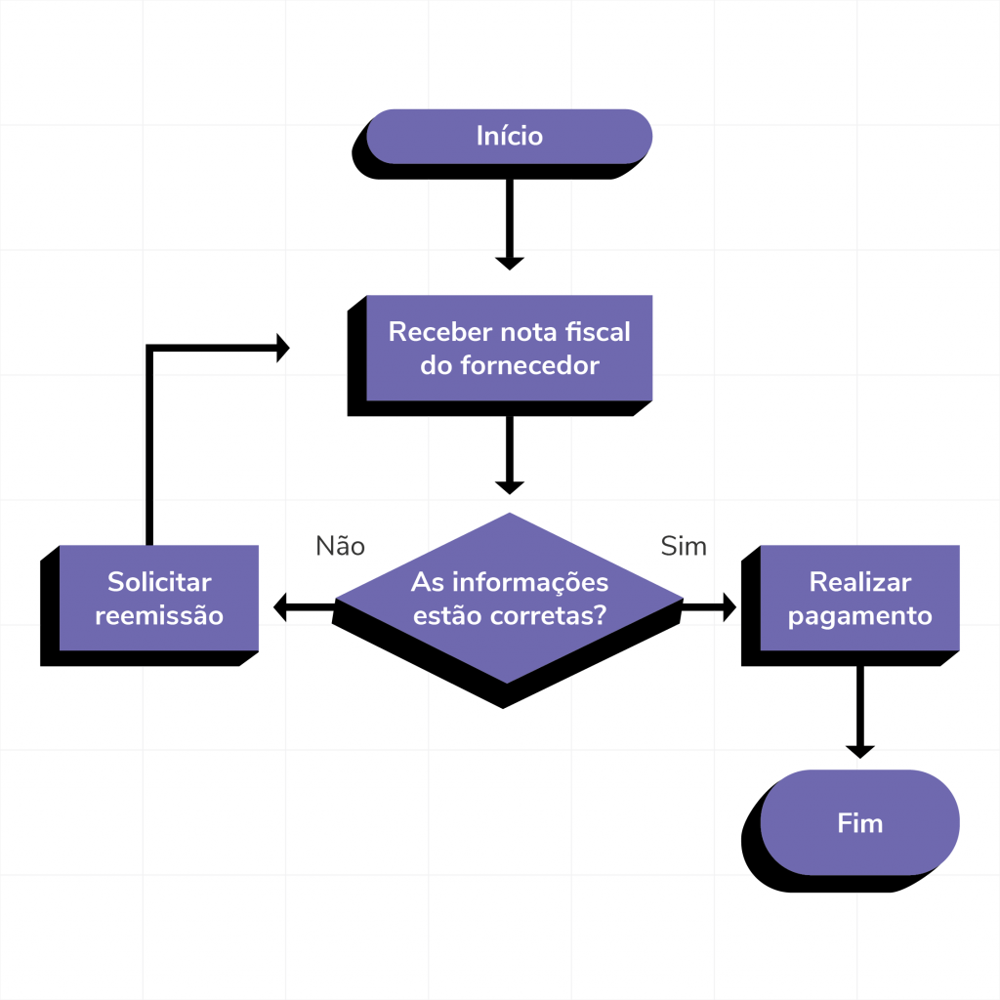

O que é Lógica de Programação?
Lógica de programação é a técnica de encadear pensamentos para atingir determinado objetivo. Na programação, isso significa escrever um conjunto de instruções ordenadas e coerentes que, quando executadas, resolvem um problema específico. Todo algoritmo é construído sobre essa base lógica.
Tipos de Dados Primitivos
Os dados manipulados em um programa precisam ser classificados em tipos. Os principais tipos primitivos utilizados na maioria das linguagens de programação são:
- int – números inteiros, como 1, 42, -7
- float – números decimais, como 3.14, -0.5
- string – texto, como "Olá, mundo!"
- boolean – verdadeiro (true) ou falso (false)
Imagens
A seguir veja imagens relacionadas à lógica de programação. A primeira imagem é um link para uma página externa sobre algoritmos.


Comparativo das Estruturas de Decisão
As estruturas de decisão permitem que o programa tome caminhos diferentes conforme uma condição. Veja abaixo um comparativo entre as principais estruturas:
| Estrutura | Uso | Exemplo |
|---|---|---|
| if | Executa um bloco se a condição for verdadeira | if (x > 0) { ... } |
| if / else | Executa um bloco ou outro conforme a condição | if (x > 0) { ... } else { ... } |
| else if | Testa múltiplas condições em sequência | else if (x == 0) { ... } |
| switch | Compara uma variável com vários valores possíveis | switch (op) { case 1: ... } |
| Estruturas disponíveis em linguagens como C, Java e Python. | ||
Formulário de Dúvidas
Tem alguma dúvida sobre lógica de programação? Preencha o formulário abaixo.
Vídeo: Introdução à Lógica de Programação
Assista ao vídeo abaixo para reforçar os conceitos apresentados neste site.